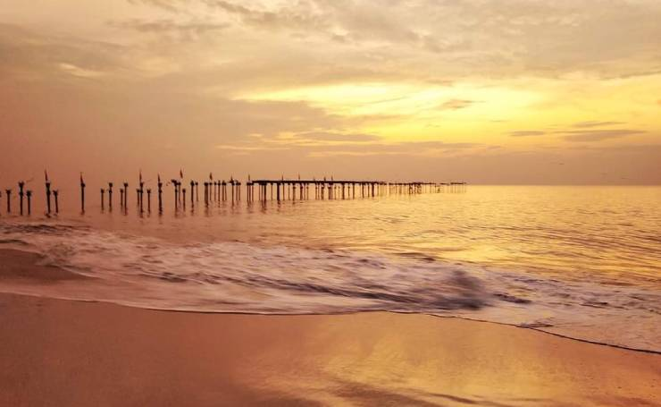
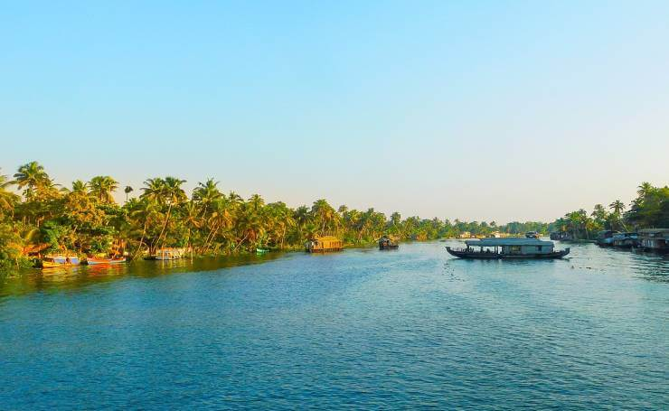

1. Alappuzha Beach
location
If you are a beach lover then the alluring beauty of Alappuzha cannot be missed. Alappuzha beach is one of the most popular tourist attractions in Alleppey. Less crowded, scenic, serene and enchanting, Alappuzha Beach will make your beach holidays one of the best to remember. Dense palm groves and soul soothing serenity of the park nearby, freshwater rivers and Scenic Arabian Sea is just a perfect need to spend some moments in peace. etc
2. Krishnapuram Palace
location

Krishnapuram Palace is a rare specimen of the glorious ancient past of Kerala. It was built in the 18th century by Anizham Thirunal Marthanda Varma, the ruler of Travancore. It is one of the most beautiful masterpieces of Kerala Style architecture. Thick-framed doors, narrow corridors, gabled roofs and dormer windows will teleport you into the world of bliss. Most of the small units of the palace are lost in the ravages of time, only the main structure has survived.
3. Vembanad Lake
location
While going for an Alleppey Kerala Backwater Tour, Vembanad Lake is a stunning tourist stopover that one must not miss. Decked with Mangrove forests all around with coconut trees, a cruise on a houseboat is the best thing to do to enjoy the best of Kerala Tourism. On a houseboat you will pass through narrow canals, lagoon islands, tiny hamlets and experience the simple and serene countryside lifestyle. Your imagination will run wild and you will be lost in the world of fantasy.